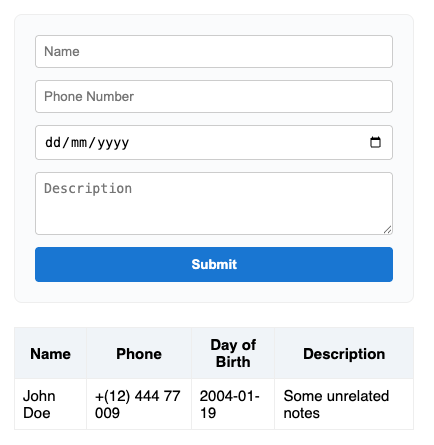
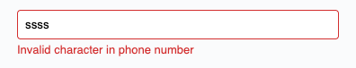
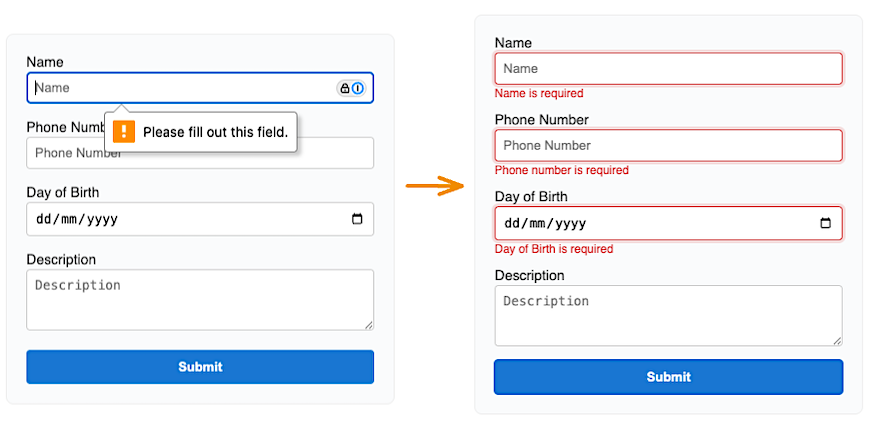
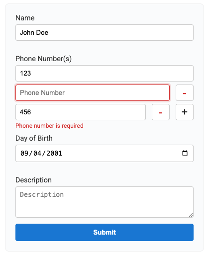

OpenAI recently released a series of videos showcasing different use cases for ChatGPT. I wanted to summarize them here, because otherwise I'd have to dig through each video again to find those useful examples—and that would be annoying.
First things first — I kicked things off by generating a simple React app using Rspack, opting for TypeScript over vanilla JS. I also chose Prettier as my formatting tool to keep things clean.
I'm using Agent mode in VS Code, running the GPT 4.1 (preview) model.
For this experiment, my goal was simple: tweak the generated code as little as possible. I wanted the Agent to do almost all the heavy lifting. If something didn't work or wasn't quite right, I would explain the issue and ask for changes — minimal manual edits.
In my first prompt, I asked the Agent to create a form with the following fields: name, phone number, date of birth, and description. Nothing fancy — we'd make it more complex later. After submitting, the data should appear neatly in a table below the form.
I need a simple form that will accept the name of the person, phone number, date of birth, and some description. Minimal but clean design. After submitting this form, it will appear in the table below the form.
The Agent delivered: a simple, clean form just as I had described. It even correctly set the input type for the date of birth.

However, all the styles were inline with the HTML elements — not ideal. I asked to move the styling into a separate file. The Agent complied but placed the styles in a CSS module (./App.module.css). Since CSS modules aren't supported by default in Rspack, I flagged it.
The Agent's reply was unexpectedly thoughtful — it offered me two solutions.
Rspack does not support CSS Modules by default.
To fix this, you have two options:
Use global CSS:
Import the CSS file directly: import "./App.module.css";
Use className="container" (and other class names as strings) instead of styles.container.
Enable CSS Modules in Rspack:
You need to update your rspack.config.ts to support CSS Modules.
Would you like to use global CSS (quickest fix), or do you want to enable CSS Modules in your Rspack config? Let me know your preference!
A solid approach. For now, I decided to go with global CSS for simplicity. We'll revisit enabling CSS Modules later.
Next issue: the phone number field accepted anything — letters, symbols, you name it. Not good. So I asked the Agent to tighten it up.
Add phone number validation. The input should only accept characters allowed for phone numbers. Notice that the number can be international. Allow any character initially, but if the user provides a character that is not allowed, show an error message.

The Agent introduced a basic regex to validate phone numbers, maintaining an error state for incorrect input.
// Validate: only allow digits, spaces, parentheses, dashes, and leading plus
const valid = /^\+?[\d\s\-()]*$/.test(value);
setPhoneError(valid ? "" : "Invalid character in phone number");
However, the validation was being done twice: once while typing, once on submit. Not ideal.
You're validating the phone number in two places. Do not do that. Validate only once and on submit check the error state. If there is an error, do not send the form values.
Although the instruction was a bit vague, the Agent adapted: validation now only happens on submit. But a classic UX mistake remained — the error stayed visible even after the user started editing. I fine-tuned it further:
I want you to improve the UX. Show the error (if the phone number is incorrect) on submit but remove the error state if the user starts editing the input.
Problem solved!
Initially, the form relied only on placeholders — not great UX. It was just a list of inputs without much structure.
When I asked the Agent to add labels, it did — but pretty naively. Labels were simply slapped next to the inputs, and spacing was handled manually with margin-top and margin-bottom. Very brittle and not scalable.
On the plus side, it correctly linked the for attribute to the input id. But it didn't plan ahead for CSS class collisions or scalable structure. (With CSS Modules, we could have avoided some of that — but remember, we’re not using them yet.)
Interesting note: I used the word "input" even for <textarea /> fields, and the Agent applied changes consistently. It was able to correctly infer context — very cool.
Initially, the Agent leaned on browser-native validation. Fair enough for basic forms, but real-world apps need something more robust.
I asked it to standardize error handling across all fields. It remembered the earlier instruction (clear the error on input change) — nice!

Time to spice things up: I asked for support for multiple phone numbers.
The Agent delivered surprisingly well. It took a few iterations as I refined the requirements based on "feel," but overall, it handled the new complexity smoothly.
Biggest takeaway: you have to be very precise about edge cases. Agents forget previous details if you don’t reiterate them.
Example: if the last phone number input shouldn't have extra margin-bottom, a future CSS tweak could accidentally reintroduce it unless carefully managed.

One recurring issue: the Agent often left dead code behind.
For instance, after adjusting margins, it would redundantly set margin: 0, even when it was already the default. Same for JavaScript: refactoring components would leave behind unused functions.
Bottom line: You have to actively understand, review, and clean up the generated code.
The Agent feels like a super-enthusiastic junior developer.
It makes all the rookie mistakes — but listens well when corrected.
Main caveat: it doesn’t "learn" permanently. You have to re-teach it with every new prompt.
But honestly, if you think about it — the Agent is awesome for doing the tedious, repetitive stuff (like aligning form fields and handling basic validation). You still need to keep a sharp eye on it, but it’s way easier than doing it all manually.
And that makes it a powerful ally.
Check out the next part of the journey here: "Knitting Better Infrastructure and Developer Experience (DX) in React with GPT-4.1"
You might also be interested in the following posts:
OpenAI recently released a series of videos showcasing different use cases for ChatGPT. I wanted to summarize them here, because otherwise I'd have to dig through each video again to find those useful examples—and that would be annoying.

How hard would it be to take a topic and generate a one-page comic out of it?